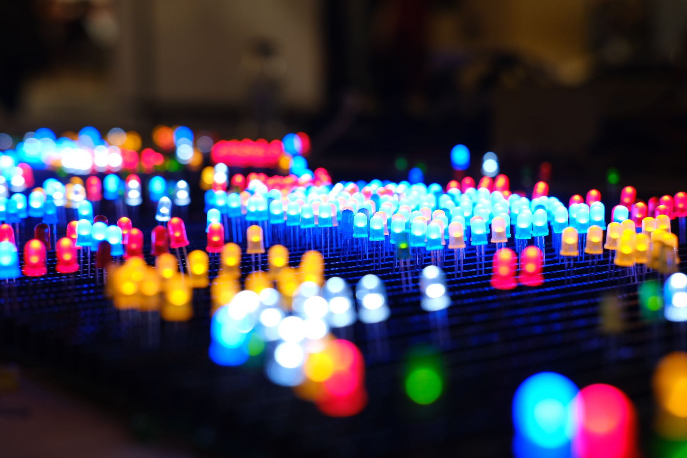

Excursion
For my excursion I went to the Maker Faire at TU Delft. I had a great time and there were a lot of super interesting creations there, one of which caught my eye because of how simple but effective the interaction was with regards to playful interaction.
This is r/place IRL by Rolf Hut. The goal of this was to simulate Reddit's 2017 social experiment in real life. If you would like to know more about the original experiment, click here. Put simply, Reddit users were given a giant blank canvas where every user could place one pixel every five minutes. This simple concept gave way to a piece of collaborative art that couldn't have been created any other way.
This IRL version works similarly in the sense that instead of pixels on a canvas, there's a very large circuit where people can place LED's wherever they choose, which then light up. This is what I mean by simple but effective here. The act of placing an LED is actually really simple, but this simplicity allowed users to be creative with the way they interacted with the installation. This also meant that the installation was super accessible to use, and it definitely showed by the amount of people that came to interact with an installation which was essentially just turning on some lights. Some people spelled out words, others made pictures or flags. Others worked together to make something cool, or added to something that was already there when they arrived at the installation. When I was at the Maker Faire, I liked going back to this installation every so often to see how it has changed over time, which was quite interesting to see.
Out of all the installations at the Maker Faire, I feel like r/place IRL was the most human technology there. It requires human input in order to work, and the end result was something that could not have been created by any computer. Here are some more pictures I took of the installation.
